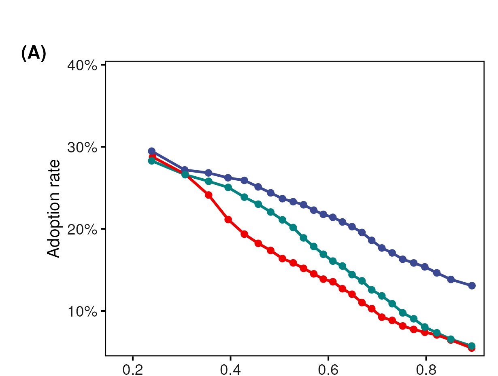
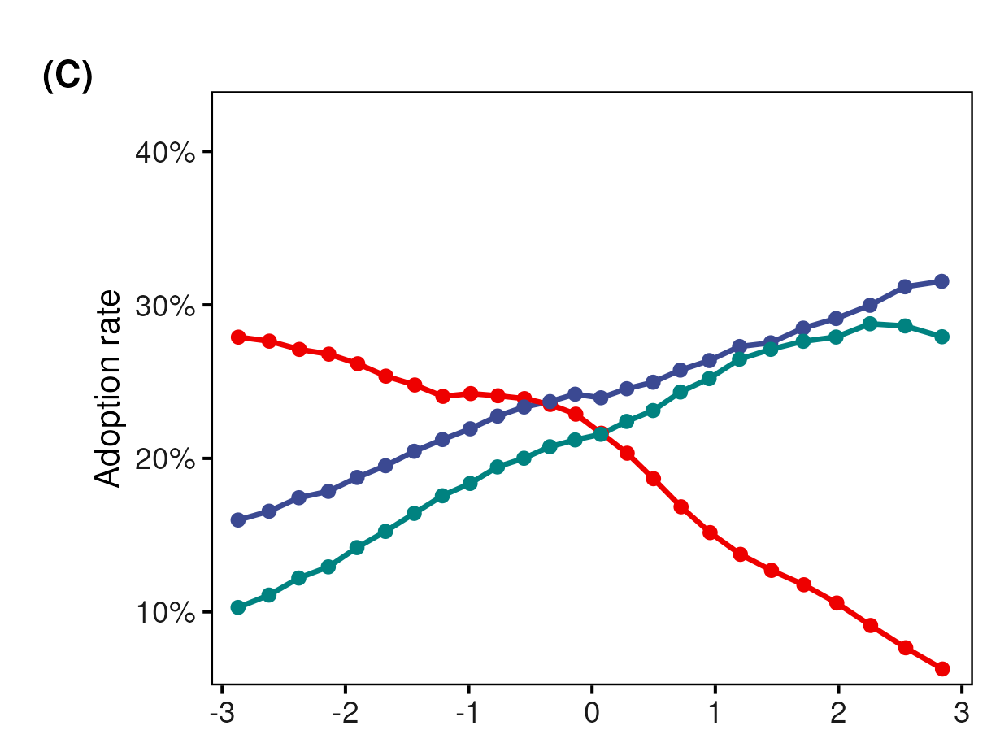
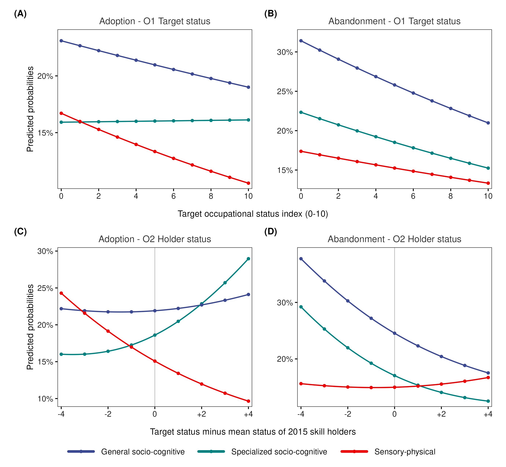
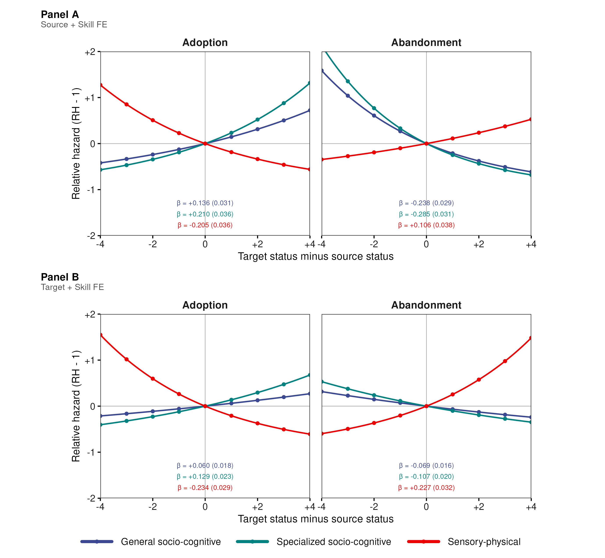

A Matthew Effect in Occupational Skill Content
Status-Sorted Changes in Cognitive and Physical Skills Reinforce Inequality
Roberto Cantillan & Mauricio Bucca
Department of Sociology | Pontificia Universidad Católica de Chile
Occupations Change From Within

An occupation can retain its name and social position while its content changes.
- New capabilities become part of the job
- Existing requirements are retained or recombined
- Other capabilities lose importance or disappear
How is occupational skill content recomposed over time?
Why Occupational Recomposition Matters Now
- AI and digitalization have renewed debate about how jobs and tasks change
- Adaptation increasingly emphasizes cognitive, analytical, and interpersonal capabilities
- The opportunities and rewards attached to those capabilities may differ across occupational positions
We do not estimate the effect of AI. AI makes a more general question urgent: how is changing skill content distributed across occupations?
Pressure to Change Does Not Determine Where Content Takes Root
- Exposure and demand create pressure for occupations to adapt
- Pressure does not ensure that a capability becomes an established occupational requirement
- Incorporation and retention may differ across occupational positions
The empirical problem is not only which skills are demanded, but where different kinds of skill content are added, retained, or shed.
Occupational Skills Are Polarized and Hierarchically Organized
Polarization (Alabdulkareem et al. 2018)
- Skills cluster into two domains
- Socio-cognitive: high education, high wages
- Sensory/physical: lower education, lower wages

Hierarchical organization (Hosseinioun et al. 2025)
- Asymmetric dependencies: some skills “enable” others
- Nested architecture has intensified over time
- Position in hierarchy predicts wages, automation risk

Occupational change begins inside an already polarized and unequal skill structure.
I. Argument
Relatedness connects; status directs.
Skill change is associated with where targets sit relative to current holders.
One Process, Two Movements: Adoption and Abandonment

Holders: occupations that already have a skill.
Target: the occupation whose content changes.
Adoption: the target gains a skill its holders already have.
Abandonment: the target sheds a skill its holders retain.
These are directed comparisons, not observed acts of transmission.
Relatedness Connects; Status Directs
Task relatedness: symmetric proximity

Relatedness says which occupations are plausible partners — but it is the same in both directions: \(\mathrm{dist}_{ij}=\mathrm{dist}_{ji}\).
Occupational status: directional position

The signed gap adds direction: positive when the target sits above the holder, negative when it sits below (\(G_{ji}=-G_{ij}\)).
Relatedness selects the partners; status is the directional filter.
Status Predicts Opposite Trajectories Across Skill Domains
For each skill, compare the target with the skill’s current holders.
Socio-cognitive skills
- More likely to be adopted above current holders
- More likely to be abandoned below current holders
Sensory-physical skills
- More likely to be adopted below current holders
- More likely to be abandoned above current holders
Gains and losses push the same way: cognitive content moves up,
physical content moves down. They do not cancel out — they compound.
Mechanisms Consistent With the Directional Pattern
- Absorptive capacity: unequal resources and organizational slack may condition which occupations incorporate new requirements.
- Credential and licensing closure: institutional restrictions may limit access to higher-status task bundles.
- Task allocation and delegation: authority relations may orient how work is reallocated among related occupations.
- Valuation asymmetry: similar content may be recognized differently depending on who performs it.
These mechanisms are theoretically consistent with the results; they are not directly observed in the occupational data.
II. Data & Methods
Testing whether status — net of relatedness — predicts direction.
Forty Million Opportunities Reveal Where Skills Take Root
O*NET, 2015–2024
- 741 occupations
- 160 requirements
- Baseline status from wages, education, and cognitive task content
Directed source–target–skill risk sets
- 21.5M adoption opportunities: the source holds the skill; the target does not
- 18.6M abandonment opportunities: source and target both hold the skill
- Event occurs when the target crosses the RCA threshold by 2024
The source is always a current holder.
The target is always the occupation that changes.
Three Skill Classes Capture Function and Specificity
Crossing domain x specificity yields three functional classes

Domain: Alabdulkareem et al. 2018 · Nestedness/specificity: Hosseinioun et al. 2025
- General socio-cognitive (49 skills): \(c_s\) at/above within-domain median — broad, scaffolding
- Specialized socio-cognitive (48 skills): \(c_s\) below median — narrower, dependent
- Sensory-physical (63 skills): \(c_s < 0\) throughout — high-nestedness cell empirically absent
Two Questions, Two Models: Who Changes — and Relative to Whom?
First: who changes?
- Unit: target occupation \(j\) × skill \(s\)
- Outcome: adoption or abandonment by the target
- Target status and mean holder status
- Mean structural distance
- Skill fixed effects; coefficients vary by skill class
Establish the target-side gradient.
Then: relative to whom?
- Unit: source \(i\) × target \(j\) × skill \(s\)
- Outcome: the same target-side adoption or abandonment event
- Predictors: signed source–target status gap and profile distance
- Complementary source + skill and target + skill fixed effects
- Three-way clustered standard errors
Test direction beyond the target gradient.
The Gravity Model Isolates Direction Net of Relatedness
For each event \(f\) and skill class \(g\), the linear predictor is:
\[ \eta^f_{ijs} = \underbrace{\alpha_s+\alpha^{(p)}_{e}}_{\text{structural fixed effects}} + \underbrace{\beta^f_g\,G_{ij}}_{\text{directional status association}} + \underbrace{\delta^f_g\,\mathrm{dist}_{ij}}_{\text{skill-profile distance}}, \qquad G_{ij}=\sigma_j-\sigma_i \]
\[ \operatorname{cloglog}\Pr(Y^f_{ijs}=1)=\eta^f_{ijs} \]
In words: how likely is the target to change, given how similar it is to the source — and whether it sits above or below it?
- \(\beta^f_g\): one signed-gap coefficient per event and skill class
- \(\delta^f_g\): profile-distance association
- Panel A: source + skill FE | Panel B: target + skill FE
- Fixed effects enter complementary specifications because \(G_{ij}\) is linear in endpoint status
III. Results
From target gradients to relational direction and aggregate implications.
Target Status Predicts Who Adds and Sheds Each Skill Class

Average marginal predictions from complementary log-log occupation–skill models with skill fixed effects; these are not raw descriptive rates.
Target Status Is Only the First Layer
The target is the occupation that adopts or abandons a skill.
Target status therefore organizes the baseline propensity for change:
- socio-cognitive content is retained and accumulated higher in the hierarchy
- sensory-physical content is retained and accumulated lower in the hierarchy
In Model 2, the association between target status and change is allowed to vary with the mean baseline status of existing skill holders.
Next question: is this only a destination-side gradient, or is change also organized by the target’s position relative to specific sources?
The Relational Test Uses Two Complementary Comparisons
Columns compare the two events
- Adoption on the left; abandonment on the right
Rows compare complementary fixed-effect specifications
- Panel A fixes the source and skill: which targets change around the same source?
- Panel B fixes the target and skill: which sources organize change around the same target?
Axes
- \(x<0\): target below source | \(x>0\): target above source
- \(y\): relative hazard minus one — how much more (above zero) or less (below zero) likely the event is, compared to an equal-status pair
The Domain Reversal Survives Both Fixed-Effect Comparisons

The Pattern Cannot Be Reduced to High-Status Targets
1. Around fixed sources
Targets above a source are more likely to adopt socio-cognitive skills and less likely to abandon them. Sensory-physical skills move in the opposite direction.
2. Around fixed targets
The same domain reversal remains when the target and skill are held fixed and identification comes from variation across sources. The result is therefore not reducible to “high-status targets adopt cognitive skills.”
3. Across events
Adoption and abandonment reinforce rather than cancel one another: socio-cognitive content becomes concentrated upward, while sensory-physical content becomes concentrated downward.
Only the Signed Gap Reproduces the Macro-Gradient

Direction Is the Informative Component
The null comparisons isolate the informative component:
Observed macro-gradient Socio-cognitive skills concentrate in higher-status occupations.
Mirror gradient Sensory-physical skills concentrate in lower-status occupations.
Direction-blind counterfactuals fail Distance-only and symmetric status models remain comparatively flat.
Directional sufficiency Applying the signed linear gap to the same risk set reproduces the signs and much of the magnitude of the aggregate pattern; this is an internal sufficiency test against direction-blind alternatives, not out-of-sample validation.
IV. Implications
Even widespread pressure to upskill can reinforce, rather than erode, the occupational hierarchy.
AI-Era Upskilling Can Compound Existing Barriers
Technological pressure may raise demand for cognitive capabilities without redistributing them evenly across occupations
Lower-status occupations can face a compounded barrier: greater pressure to adapt, but weaker incorporation and retention of socio-cognitive content
This pattern is consistent with inequality being reproduced inside occupations, before workers move or jobs disappear
Connecting to Recent Work on the Bottom of the Distribution
Using 120M job postings, Han & Cheng (2026, AJS) show that the bottom diversifies — but is not rewarded for it: a skills-value mismatch.
Our results are at the occupation level, not job postings — a different unit of analysis. Read as complementary: diversification at the bottom is disproportionately sensory-physical, and the socio-cognitive content that does appear there is not retained the way it is retained above.
Han & Cheng show that the bottom diversifies but isn’t rewarded; we show why: the directional filter determines what content takes root at each level.
Limitations
Occupational level: we do not observe individual workers or the organizational decisions behind skill changes
Observational design: estimates directional associations, not direct pairwise transmission or a unique causal mechanism
Institutional scope: U.S. occupational data; credentialing, wage-setting, and labor-market institutions may moderate the pattern
Pressure to Upskill Can Reinforce Occupational Hierarchy
Realized occupational skill change is not generalized cognitive upgrading. It is status-sorted: socio-cognitive content concentrates upward while sensory-physical content concentrates downward.
- Relatedness connects: profile similarity identifies plausible occupational counterparts
- Status orders the association: adoption and abandonment vary directionally with the signed source–target gap
- The two margins compound: cognitive content concentrates upward; physical content concentrates downward
The observed pattern is consistent with technological change reproducing inequality through the changing content of occupational positions.
Thank You
Roberto Cantillan
Department of Sociology, PUC Chile
rcantillan@uc.cl
Paper and Replication: github.com/rcantillan/skill_diffusion
Backup Slides
B1: Main Threats and What We Do About Them
| Main threat | Design response |
|---|---|
| A target-status gradient may look relational | Complementary source + skill and target + skill fixed-effect comparisons |
| RCA changes may reflect denominator drift | Fixed-2015 denominator check; raw-importance diagnostic |
| Skills with many sources may dominate the risk set | Equal target-skill weighting preserves all 24 slope signs |
| Results may depend on measurement choices | Threshold, status, taxonomy, and period sensitivity checks in the SI |
These checks address measurement and specification sensitivity. They do not establish direct transmission or a unique causal mechanism.
B2: Formal Definitions
Revealed Comparative Advantage:
\[\mathrm{RCA}(j,s) = \frac{\mathrm{onet}(j,s)/\sum_{s'}\mathrm{onet}(j,s')}{\sum_{j'}\mathrm{onet}(j',s)/\sum_{j',s''}\mathrm{onet}(j',s'')}\]
Event definitions for skill s:
- Baseline specialist: RCA \(\geq 1\) at \(t_0=2015\)
- Endline specialist: RCA \(\geq 1\) at \(t_1=2024\)
- Adoption: target crosses from below to above RCA threshold
- Abandonment: target falls from above to below RCA threshold
Directional gaps:
\[G_{ij} = \sigma_j - \sigma_i\]
The linear specification estimates one signed coefficient \(\beta_g\) for each skill class: \(\beta_g>0\) orients change toward higher-status targets; \(\beta_g<0\) orients it toward lower-status targets.
B3: Skill Taxonomy
Functional domain:
- Louvain communities on the 2015 RCA co-specialization network
- Socio-cognitive: 97 skills
- Sensory-physical: 63 skills
Functional specificity:
\[c_s = \frac{\mathrm{NODF}_{\text{obs}} - \mathbb{E}[\mathrm{NODF}^{(s)}_{\text{rand}}]}{\mathrm{sd}[\mathrm{NODF}^{(s)}_{\text{rand}}]}\]
Three-class taxonomy:
- General socio-cognitive: 49 skills
- Specialized socio-cognitive: 48 skills
- Sensory-physical: 63 skills
The high-nestedness sensory-physical cell is empirically absent.
B4: Key Coefficients
Linear signed-gap coefficients, Panel A: source + skill FE
| Skill type | Adoption β (SE) | Abandonment β (SE) |
|---|---|---|
| General SC | +0.136 (0.031) | −0.238 (0.029) |
| Specialized SC | +0.210 (0.036) | −0.285 (0.031) |
| Sensory-physical | −0.205 (0.036) | +0.106 (0.038) |
Linear signed-gap coefficients, Panel B: target + skill FE
| Skill type | Adoption β (SE) | Abandonment β (SE) |
|---|---|---|
| General SC | +0.060 (0.018) | −0.069 (0.016) |
| Specialized SC | +0.129 (0.023) | −0.107 (0.020) |
| Sensory-physical | −0.234 (0.029) | +0.227 (0.032) |
Cloglog hazard scale. One signed linear coefficient per skill class.
B5: Complete Gravity Model Derivation
Step 1: Classic Gravity \[T_{ij} = k \cdot \frac{M_i M_j}{D_{ij}^{\gamma}} \quad \Rightarrow \quad \log \mathbb{E}[T_{ij}] = \beta_0 + \alpha_i + \beta_j - \gamma \log D_{ij}\]
Step 2: Triadic Extension \[\Lambda^f_{ijs} \propto \frac{M_i \cdot M_j \cdot S_s}{D_{ij}}\]
Step 3: Signed Status Friction \[G_{ij}=\sigma_j-\sigma_i\]
Step 4: Flow-specific distance \[-\log D^f_{ij} = \beta_g G_{ij} + \delta_g \mathrm{dist}_{ij}\]
Step 5: Full Specification \[\operatorname{cloglog}\big(P(Y^f_{ijs}=1)\big) = \alpha_{\mathrm{FE}} + \alpha_s + \beta_g G_{ij} + \delta_g\mathrm{dist}_{ij}\]
B6: Key Magnitudes
Main signed-gap gradients:
| Flow | Socio-cognitive | Sensory-physical |
|---|---|---|
| Adoption | Positive β | Negative β |
| Abandonment | Negative β | Positive β |
Interpretation:
- Cognitive content accumulates at the top through gains and retention
- Physical content accumulates below through gains and retention
- The signed gradient persists under source + skill and target + skill FE
B7: Occupational Status — PCA Construction

Cantillan & Bucca | RC28 NYU 2026